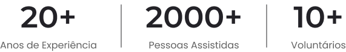

Bem-vindo ao Recanto São Miguel
A Comunidade São Miguel é um espaço dedicado à evangelização, cura espiritual e prestação de atendimentos sociais e psicológicos. Fundada com a missão de propagar os ensinamentos cristãos e promover a transformação espiritual, a comunidade se destaca por seu comprometimento com o bem-estar integral das pessoas, abraçando não apenas as necessidades espirituais, mas também as demandas sociais e psicológicas.
Vida em comunidade venha fazer parte.
Faça parte da Comunidade São Miguel, um espaço vibrante e dedicado à transformação espiritual, cura e acolhimento social/psicológico. Se você compartilha do desejo de fazer a diferença na vida das pessoas, contribuindo para a evangelização, cura espiritual e atendimento especializado a quem mais precisa, este convite é para você.